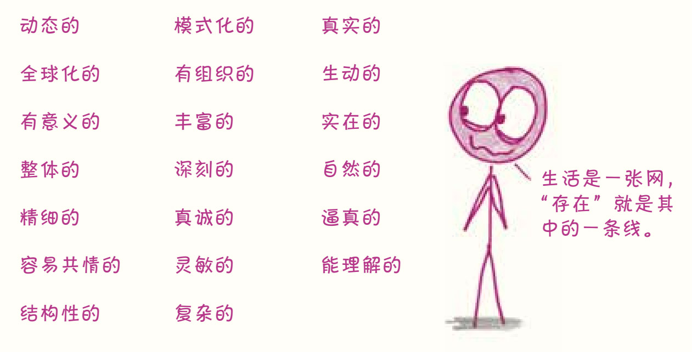
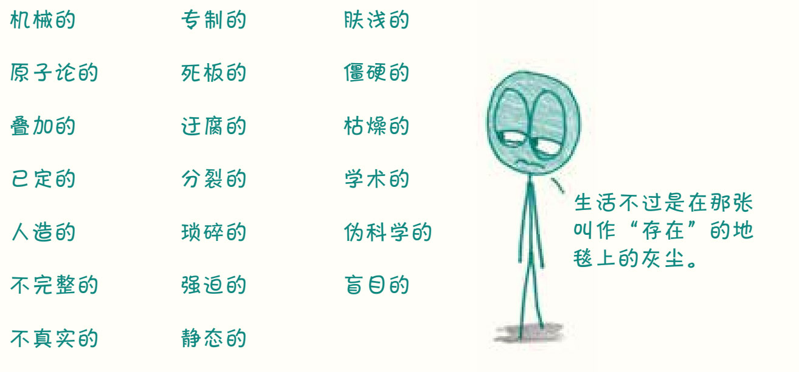

曾经有一项针对医学专业人士的调查1，要求调查对象将临床诊断法与统计方法进行对比，以下是他们用来形容这两种不同方法的词语：
临床诊断法的特点包括……

统计方法的特点包括……

请允许我代表世界各地的统计学家说一句——扎心了。
我承认，整个统计学项目具有某种还原性，会把野性的、不可预测的世界驯服成温顺的一行行数字。因此，以怀疑和谨慎的态度对待所有统计数据是非常重要的。从本质上来说，统计数据是对现实的压缩、截取、提炼和简化。
当然，这确实就是他们力量的来源。
为什么科学论文有摘要？为什么新闻有标题？为什么动作片的预告片会把所有精彩和最炸裂的镜头都剪辑出来？因为简化在生活中是非常重要的，没人有时间整天欣赏现实璀璨的千变万化。因为我们还有很多地方要去，还有很多文章要浏览，还有很多视频要看。我不会为了7月要去一个新城市就去找一本专门描写湿热气候的小说来读，而是会查一下当地温度。这样的统计数据并不是“生动的”“深刻的”或“结构性的”（我也不明白这个词是什么意思），但它简单、明了、有用。通过浓缩和简化世界的信息，统计学给了我们一个把握全世界的机会。
然而，统计学还可以做更多的事。统计还会对信息进行分类、推断和预测，使我们能够建立起强大的现实模型。没错，整个过程的关键是简化，简化意味着省略细节，进而意味着和现实有出入——也可以算是一种谎言。但在最好的情况下，统计数据是一种诚实的谎言，这需要人类思维中所有美好的品质，包括好奇心和同理心。
这样的话，统计数据和简笔画就差不多了，它们都是对现实拙劣的描绘，也许缺鼻子少眼睛，但它们都在以自己独特的方式讲述着事实。